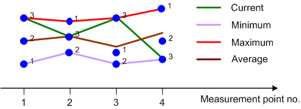

Statistics Type
The statistics type defines how the R&S CMW calculates the displayed values if the measurement extends over several measurement intervals. Assume that a trace or a bar graph contains a series of different measurement points. After n consecutive measurement intervals, the instrument has collected n complete traces, corresponding to n measurement results at each point.
The different statistics types are calculated as follows:
- "Current": the current trace, i.e. the last result at all measurement points
- "Minimum": the smallest of the n collected values at each measurement point
- "Maximum": the largest of the n collected values at each measurement point
- "Average": a suitably defined average over all collected values at each measurement point
- "Standard Deviation": the root mean square deviation of all collected values at each measurement point from the "Average" value

Statistics types
"Minimum"/"Maximum" and "Average" results are calculated differently if the measurement extends over more than one statistics cycle (repetition mode "Continuous", measurement time longer than one statistics cycle):
|
The statistics type of the displayed trace generally belongs to the display configuration settings in the measurement configuration dialogs. For single measurement results, the R&S CMW often displays a table with all statistics types.
The statistics type is often combined with detector settings.